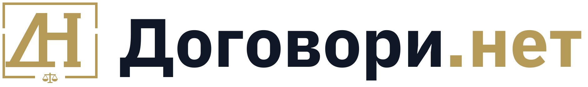
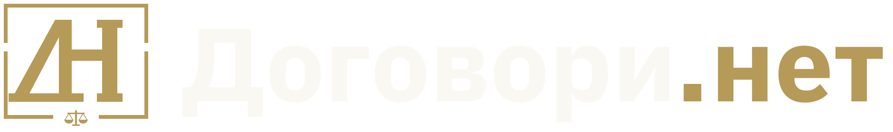
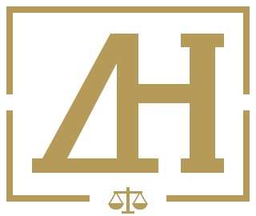
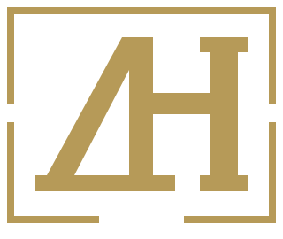
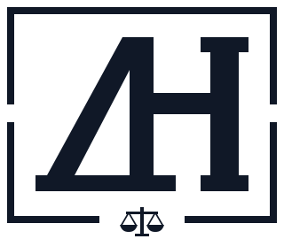

Договори.нет — визуален бранд наръчник
Одобрен кирилски монограм „ДН“, септември 2026 г.
Основни версии


Палитра
Gold
#B69A58Navy
#101827Ivory
#FAF8F3Свободно поле

Пазете свободно поле поне 1/4 от височината на знака.
Малки размери

Самостоятелни знаци

